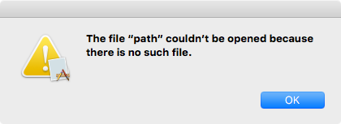
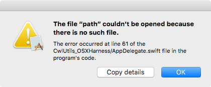

Presenting unanticipated errors to users
The best approach for presenting error conditions to the user is to integrate feedback into the user interface about the condition that the error indicates. This could be changing an icon, colors, adding status text or otherwise changing the state of a user interface element.
This “best approach” requires that we understand the error condition and plan for it in advance.
What if we’re still implementing the app and haven’t had time to exhaustively discover possible error conditions and plan for them? What about technically possible error conditions that we cannot trigger in our own testing making planning impractical? What about error conditions that should never occur if everything is well behaved but are still semantically possible?
We need a base level tier of error handling and reporting to the user. This base level must be very low overhead (so we can add it use it without much thought during development) and while it must report an error to the user, it is primarily intended to gather diagnostic information so the source of the error condition can be understood and facilitate fixes and other maintenance.
Introduction
First, some quick terminology:
- an error condition is a failed conditional check that results in a function skipping its usual functionality and instead returning an nominated error value.
- an error is a value used to report that an error condition occurred and normal functionality was skipped
- error handling is code that looks for errors and performs different actions based on the presence of those errors
- error reporting communicates an error result from a user task to the user
In my previous article, “Errors: unexpected, composite, non-pure, external” I focussed on the first two points and discussed how, from the perspective of the function that creates the error, the error always represents an “unexpected” condition.
In this article, I’m focussing on the latter two points. It’s important to realize that, from the perspective of handling and reporting code, errors might not be entirely unexpected.
Certainly in some cases, an “error” result from one function may represent the preferred result for the receiver (an expected error). In other cases, error handling may deal with errors by choosing a different path that satisfies requirements another way, so the error is never communicated to the user (error recovery). In most other scenarios, even if the error is not “preferred”, then at least we know how to handle the error (an anticipated error) and specialized feedback is presented to the user in a way that is aesthetically appropriate.
In most programs of reasonable complexity, there are likely to be paths through the program – even if they are rare or theoretical – where an error receives no custom handling. This means: no custom text, no custom code paths based on the error type, just bulk acknowledgement of an unanticipated error and an abort of the task in progress.
Reliable, maintainable programming requires that we always have an approach for errors, even these unanticipated errors, so that the error is routed through our error handling and reported to the user. Given that this type of error potentially represents programmer oversight, it’s important that this error include helpful diagnostic information so fixes or other maintenance can occur if required.
Mediocre error handling and reporting
Let’s look at a basic user task. In this case, an @IBAction method on a view controller (as triggered by a button press). The user action then starts a processing task which may trigger an error condition.
// An action on a view controller, triggered by a button press
@IBAction func someUserAction1(_ sender: AnyObject) {
someProcessingTask1("/invalid/path")
}
// A processing task in the data model
func someProcessingTask1(path: String) {
do {
let data = try NSData(contentsOfFile: path, options: .mappedIfSafe)
process(data: data)
} catch let error as NSError {
showAlert(error: error)
}
}
// A utility function (part of neither data model nor user interface)
func showAlert(error: NSError) {
#if os(OSX)
NSAlert(error: error).runModal()
#else
let alert = UIAlertController(title: error.localizedDescription, message:
error.localizedFailureReason, preferredStyle: UIAlertControllerStyle.alert)
alert.addAction(UIAlertAction(title: NSLocalizedString("OK", comment: ""), style:
UIAlertActionStyle.default, handler: nil))
UIApplication.shared.windows[0].rootViewController!.present(alert, animated: true,
completion: nil)
#endif
}try! or a deliberate "no-op" catch is valid. This article is about handling situations where there is a degree of uncertainty so both of these options are excluded.If you look about, you’ll see roughly this pattern repeated in many projects. It’s the result of not wanting to think about error handling but feeling obliged to put something into the catch block.
At least this approach does something in the event of an error. That makes this approach a step up from the typical Objective-C error handling (pass nil for the NSError ** parameter and ignore the problem entirely) or an empty catch block (which is the equivalent in Swift).
But despite appearing to handle the error, this approach can have some potentially serious problems.
Non-unique error information
On its own, the error dialog produced by the previous code may be helpful or it may be useless.

If a user reports that they’re seeing this error dialog in your program, do you have enough information to work out what’s happening and potentially fix the problem?
This error message tells us a given file couldn’t be found but it doesn’t tell us why we’re trying to open a non-existent file. Did we process the path incorrectly? Have we missed a step before getting here? How did the program get to this point? What has gone wrong to trigger this event?
If the only information we have is the error message it’s difficult to properly diagnose many situations. We have a problem that needs to be fixed but we either need to rely on intuition to find the problem or we need to reproduce the problem again in the debugger. The information we are given in this error message alone is insufficient.
For a “file not found” error like this, the default error message is more helpful than usual since the exact missing file is named (although the full path is omitted). Other errors typically have far more opaque default error messages that might be used generically across a range of different circumstances. Errors like “The file could not be played.”, “The operation couldn’t be completed.” are so broad as to be useless. And if you’re unlucky enough to get a POSIX error code, it could have been generated by lots of different functions for lots of different reasons – they are not unique.
Always propagate errors
But the amount of information reported isn’t the biggest problem. The biggest problem is presenting the error at the site where it occurs, rather than the site that triggered the overarching task. We need to propagate the error back to its origin in the someUserAction1 function, rather than trying to handling it in the middle of the task.
Without error propagation:
- the user-interface may get stuck in a mid-task state
- earlier stages in the task can’t attempt a retry or recover
- we’re forcing the task’s presentation of the error, rather than giving the user interface controller that triggered the action a the chance to present errors in a more integrated way
In Objective-C, propagating errors was really annoying (layer, after layer passing NSError** parameters). I personally avoided this where possible – storing the error in a state structure somewhere and instead propagating BOOL through the stack. This approach had numerous problems (shared state is a maintenance headache) but Objective-C’s idiomatic error handling was just miserable.
Swift’s throws keyword is one of the best features of the language. You may need to paint a lot of functions with the throws attribute (especially if you need to throw from deep inside a hierarchy) but it makes your interfaces honest.
What do we want?
Let’s look at a better approach…
// An action on a view controller, triggered by a button press
@IBAction func someUserAction2(_ sender: AnyObject) {
do {
try someProcessingTask2(path: "/invalid/path")
} catch let e as NSError {
self.presentError(error as NSError)
}
}
// A processing task in the data model
func someProcessingTask2(path: String) throws {
try rethrowUnanticipated {
let data = try NSData(contentsOfFile: path, options: .DataReadingMappedIfSafe)
processData(data)
}
}Why is this better?
Error propagation improvements
The most significant difference is that the function responsible for starting the user action – someUserAction2 – is now the function responsible for presenting feedback. The highest priority in a user interface is to give feedback to the user’s actions; this control flow lets the user action that triggers the task be responsible for the display of the result.
Moving the presentation to the view controller in this way removes all view code from the model. In the first example, the data model was performing a view action (presenting user-interface feedback). This is a theoretical win for separation of concerns.
The function presentError part of Cocoa on Mac OS X but isn’t usually part of iOS. I’ve provided an implementation on UIViewController to make this work. Even if you don’t choose to use presentError, it remains a good idea to pass your errors through a relevant controller associated with your view hierarchy. This gives you the ability to use custom presentation for errors at a later time by overriding the presentation method.
Diagnostic improvements
Now, I haven’t just let the error thrown by NSData propagate directly. That would be possible and it would work but the error dialog would be the same “default” error I showed in the “mediocre” example, above. In a situation where you know the cause of the error and you know that the localizedDescription for this error fully describes it to the user, then this type of simple error reporting may be sufficient, however, this article focusses on errors that we haven’t anticipated and we don’t know if the localizedDescription will be helpful at all.
We want more information to ensure easy problem diagnosis. The rethrowUnanticipated wrapper function adds an UnanticipatedErrorRecoveryAttempter to the userInfo dictionary of the error and the dialog becomes:

and clicking the “Copy details” button places the following text on the clipboard:
CwlUtils_OSXHarness/1, x86_64/MacPro4,1, Version 10.11.4 (Build 15E65), en, fr
The file “path” couldn’t be opened because there is no such file.
The error occurred at line 61 of the CwlUtils_OSXHarness/AppDelegate.swift file in the program's code.
NSCocoaErrorDomain: 260. [NSFilePath: /invalid/path, NSLocalizedDescription: The file “path” couldn’t be opened because there is no such file., NSUnderlyingError: Error Domain=NSPOSIXErrorDomain Code=2 "No such file or directory"]
1 CwlUtils_OSXHarness 0x000000010000241c _TFC19CwlUtils_OSXHarness11AppDelegate19someProcessingTask2fzSST_ + 412
2 CwlUtils_OSXHarness 0x00000001000025c2 _TFC19CwlUtils_OSXHarness11AppDelegate15someUserAction2fPs9AnyObject_T_ + 114
3 CwlUtils_OSXHarness 0x0000000100002716 _TToFC19CwlUtils_OSXHarness11AppDelegate15someUserAction2fPs9AnyObject_T_ + 54
4 libsystem_trace.dylib 0x00007fff9caa107a _os_activity_initiate + 75
5 AppKit 0x00007fff8c9ace89 -[NSApplication sendAction:to:from:] + 460
6 AppKit 0x00007fff8c9befde -[NSControl sendAction:to:] + 86
7 AppKit 0x00007fff8c9bef08 __26-[NSCell _sendActionFrom:]_block_invoke + 131
8 libsystem_trace.dylib 0x00007fff9caa107a _os_activity_initiate + 75
9 AppKit 0x00007fff8c9bee65 -[NSCell _sendActionFrom:] + 144
10 libsystem_trace.dylib 0x00007fff9caa107a _os_activity_initiate + 75
11 AppKit 0x00007fff8c9bd48a -[NSCell trackMouse:inRect:ofView:untilMouseUp:] + 2693
12 AppKit 0x00007fff8ca05fd0 -[NSButtonCell trackMouse:inRect:ofView:untilMouseUp:] + 744
13 AppKit 0x00007fff8c9bbbb4 -[NSControl mouseDown:] + 669
14 AppKit 0x00007fff8cf10469 -[NSWindow _handleMouseDownEvent:isDelayedEvent:] + 6322
15 AppKit 0x00007fff8cf1144d -[NSWindow _reallySendEvent:isDelayedEvent:] + 212
16 AppKit 0x00007fff8c95063d -[NSWindow sendEvent:] + 517
17 AppKit 0x00007fff8c8d0b3c -[NSApplication sendEvent:] + 2540
18 AppKit 0x00007fff8c737ef6 -[NSApplication run] + 796
19 AppKit 0x00007fff8c70146c NSApplicationMain + 1176
20 CwlUtils_OSXHarness 0x0000000100002984 main + 84
21 libdyld.dylib 0x00007fff982a45ad start + 1
22 ??? 0x0000000000000003 0x0 + 3
How is it done?
No significant work happens in the rethrowUnanticipated function. It’s just a convenience wrapper that looks like this:
public func rethrowUnanticipated<T>(file file: String = #file, line: Int = #line, execute: () throws -> T) throws -> T {
do {
return try execute()
} catch {
throw error.withUnanticipatedErrorRecoveryAttempter(file: file, line: line)
}
}In situations where you want to selectively handle different error types or create your own errors, you would call withUnanticipatedErrorRecoveryAttempter on your error directly instead of using this convenience wrapper.
In any case, it’s withUnanticipatedErrorRecoveryAttempter that’s important. It converts the ErrorType to an NSError (if it wasn’t one already) and adds keys to the userInfo dictionary so that the error can participate in Cocoa’s error recovery system.
The mechanics of presentError and NSRecoveryAttempterErrorKey are fairly straightforward and you can read about them in Apple’s ‘Recover From Errors’ documentation. Obviously, in this case, we’re not strictly “recovering” from an error, we’re just attaching diagnostic information.
Let’s look then at how we attach all this information.
public extension Error {
/// Return an NSError with the same properties as this error but with an `UnanticipatedErrorRecoveryAttempter` attached.
public func withUnanticipatedErrorRecoveryAttempter(file: String = #file, line: Int = #line) -> NSError {
// We want to preserve the "userInfo" dictionary, so we avoid "self as NSError"
// if we can (since it creates a new NSError that doesn't preserve the userInfo).
// Instead, we cast *via* NSObject.
let e = self as NSError
var userInfo: [AnyHashable: Any] = e.userInfo
// Move any existing NSLocalizedRecoverySuggestionErrorKey to a new key (we want
// to replace it but don't want to lose potentially useful information)
if let previousSuggestion = userInfo[NSLocalizedRecoverySuggestionErrorKey] {
userInfo[UnanticipatedErrorRecoveryAttempter.PreviousRecoverySuggestionKey] = previousSuggestion
}
// Attach a new NSLocalizedRecoverySuggestionErrorKey and our recovery attempter
// and options
let directory = ((file as NSString).deletingLastPathComponent as NSString).lastPathComponent
let filename = (file as NSString).lastPathComponent
let suggestion = String(format: NSLocalizedString("The error occurred at line %ld of the %@/%@ file in the program's code.", comment: ""), line, directory, filename)
userInfo[NSLocalizedRecoverySuggestionErrorKey] = suggestion
userInfo[NSLocalizedRecoveryOptionsErrorKey] = UnanticipatedErrorRecoveryAttempter.localizedRecoveryOptions()
userInfo[NSRecoveryAttempterErrorKey] = UnanticipatedErrorRecoveryAttempter()
// Attach the call stack
userInfo[UnanticipatedErrorRecoveryAttempter.ReturnAddressesKey] = callStackReturnAddresses()
return NSError(domain: e.domain, code: e.code, userInfo: userInfo)
}
}Getting a little mileage out of my own code, this uses callStackReturnAddresses and symbolsForCallStackAddresses from Tracing tasks with stack traces in Swift.
When the error this function returns is passed to presentError it will use the NSRecoveryAttempterErrorKey added to the userInfo dictionary.
This UnanticipatedErrorRecoveryAttempter provides implementations for the NSErrorRecoveryAttempting methods and uses them to put an OK and Copy details button in the presentError dialog and when the Copy details button is pressed, generates a string to put on the generalPasteboard using the following function:
private func extendedErrorInformation(_ error: NSError) -> String {
var userInfo = error.userInfo
// Fetch and format diagnostic information for display
let callStackSymbols = (userInfo[UnanticipatedErrorRecoveryAttempter.ReturnAddressesKey] as? [UInt]).map { symbolsForCallStack(addresses: $0).joined(separator: "\n") } ?? NSLocalizedString("(Call stack unavailable)", comment: "")
let localizedDescription = error.localizedDescription
let localizedRecoverySuggestion = error.localizedRecoverySuggestion ?? ""
let applicationName = (Bundle.main.infoDictionary?[kCFBundleNameKey as String] as? String) ?? ProcessInfo.processInfo.processName
let applicationVersion = (Bundle.main.infoDictionary?[kCFBundleVersionKey as String] as? String) ?? NSLocalizedString("(App version unavailable)", comment: "")
let locales = Locale.preferredLanguages.joined(separator: ", ")
let machineInfo = "\(Sysctl.machine)/\(Sysctl.model), \(ProcessInfo.processInfo.operatingSystemVersionString)"
// Remove already handled keys from the userInfo. Anything not yet handled will be output as part of the diagnostic information.
userInfo.removeValue(forKey: NSLocalizedRecoverySuggestionErrorKey)
userInfo.removeValue(forKey: NSLocalizedRecoveryOptionsErrorKey)
userInfo.removeValue(forKey: NSRecoveryAttempterErrorKey)
userInfo.removeValue(forKey: UnanticipatedErrorRecoveryAttempter.PreviousRecoverySuggestionKey)
userInfo.removeValue(forKey: UnanticipatedErrorRecoveryAttempter.ReturnAddressesKey)
return "\(applicationName)/\(applicationVersion), \(machineInfo), \(locales)\n\n\(localizedDescription)\n\(localizedRecoverySuggestion)\n\n\(error.domain): \(error.code). \(userInfo)\n\n\(callStackSymbols)"
}This includes “machine” and “model” information, generated as described in my earlier article Gathering system information in Swift with sysctl.
Usage
The code presented in this article is part of the CwlUnanticipatedError.swift file in my CwlUtils project on Github.
The ReadMe.md file for the project contains detailed information on cloning the whole repository and adding the framework it produces to your own projects.
If you want to play with the example error handling code used in this article, it is part of the “CwlUtils_OSXHarness” and “CwlUtils_iOSHarness” targets which each produce a basic app with some buttons to trigger errors.
Conclusion
This article discussed two key points:
- The importance of propagating errors all the way back to their origin
- Using an error that embeds an
NSErrorRecoveryAttemptingimplementation for diagnostic purposes
Combined with some wrapper functions, Swift’s error handling and Cocoa’s error reporting capabilities, these two techniques provide a solid base level of error management that you can start to use, even at a hastily implemented prototype stage, and iteratively replace with better error handling and reporting as needed.
In a fully-tested program, this type of error reporting is not what the user should see. The presence of line numbers and mention of the “program’s code” is a cue to any mildy savvy user that this dialog is diagnostic tool, not a deliberate feature. While the user may be able to use the information contained to resolve the problem on their own, they are hinted to provide the information under the “Copy details” button through appropriate support channels if the problem persists.
Indent with tabs or spaces? I wish I didn't need to know.
Comparing Swift to C++ for parsing